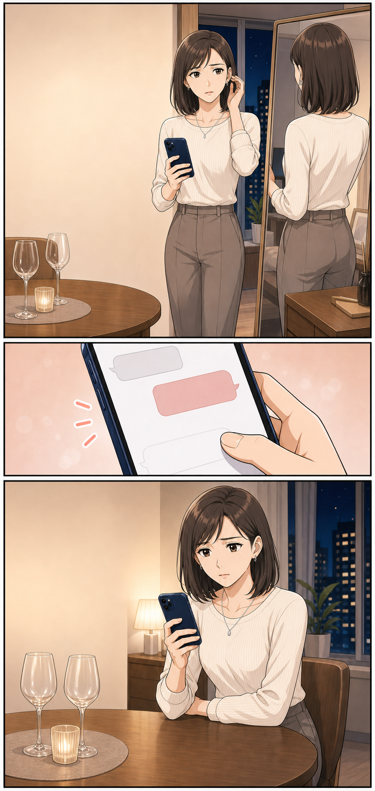
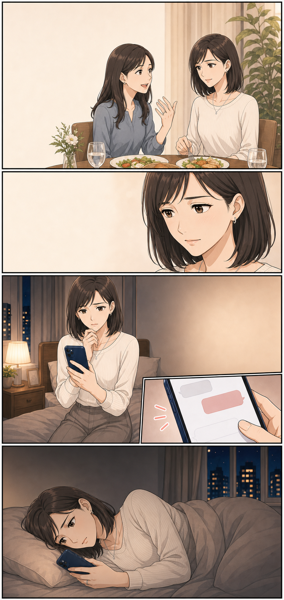
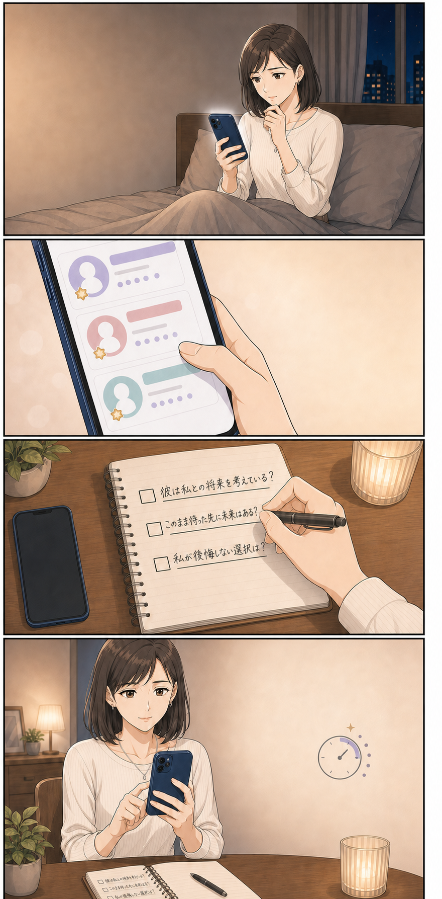
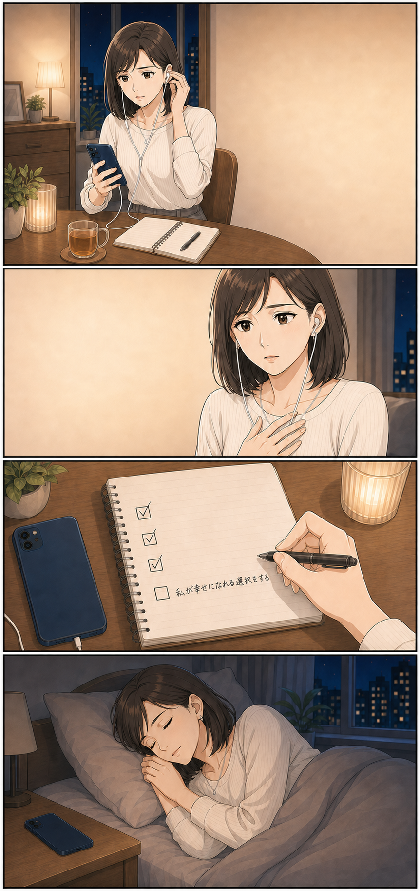

ある日の夜、23:48
送りたい。でも
嫌われるのが怖い。
でも、もし嫌われたら――。何度もスマホを開いては閉じて、ひとりで答えを探していました。同じように悩んでいた、ある女性のお話です。
あなたが知りたいのは、どんなことですか？
- 1あの人が心に隠している、本当の気持ち
- 2二人の恋が、これからどう進んでいくのか
- 3この恋を待つべきか、次へ進むべきか
誰にも言えない恋を、ひとりで抱えていた。
複雑な恋愛相談の利用場面を想定したイメージストーリーです。

今夜、会えるのを
楽しみにしてた。
そっか。
大丈夫だよ
大丈夫じゃないなんて、
言えるわけない。

友人最近、いい人
いないの？
うーん。今は
仕事が忙しくて
好きな人はいる。
でも、その人には
帰る場所がある。
本当のことを、
誰かに話したい。

こんな恋、
誰にも話せない。
複雑な恋に詳しい
先生もいるんだ……
15分だけなら、
話してみようかな

今日は15分だけ。
聞きたいことは
3つです
先生彼の気持ちだけでなく、
あなたが幸せになれる
未来も見てみましょう
彼を待つだけの夜から、
自分の未来を考える夜へ。
未来を決めてもらうのではなく、誰にも言えなかった気持ちを整理する。
そんな占いの使い方もあると知りました。※上記は利用シーンをもとにした体験イメージです。話してみて思ったこと
欲しかったのは、彼の答えより気持ちを話せる時間だったのかも。
電話占いって、正直ちょっと緊張しました。
でも、うまく話そうとしなくても大丈夫でした。声に出しているうちに、「彼はどう思っている？」だけでなく、「私はどうしたい？」という気持ちも見えてきて、少しだけラクになれました。
聞きたいことはメモでOK
彼の気持ち、二人のこれから、私が大切にしたいこと。
口コミを見ながら、話しやすそうな先生を選ぶ
複雑な恋愛や復縁を得意とする先生から探せました。
いきなり答えを決めなくていい
まずは話してみる。それくらいの気持ちで始めました。
ちょっと安心できたポイント
電話占いって少し不安。
でも、私にも使えそう。
いきなり申し込むのではなく、まずは気になることをちょっと調べてみました。運営元がちゃんとわかる
プライム市場上場グループが運営していると知って、少し安心できました。
悩みに合いそうな先生を探せる
復縁や相手の気持ちなど、得意な相談と口コミから選べます。
初めてなら、お得に試せる
初回特典は最大21,000円分無料。まずは特典の内容を見てから決めてもよさそうです。
※特典には条件・上限・期限があります。詳しい内容は公式サイトで見られます。
話す前のちょっとした準備
話す前に、これだけメモしておくと安心
- 1
聞きたいことをメモする
いちばん知りたいことから順番をつけます。
- 2
先生の得意分野を見る
自分の悩みに近い相談内容や口コミに目を通します。
- 3
今日はここまでと決める
話したい範囲を先に決めておくと安心です。
申し込む前に気になったこと
気になることは、先に調べておきました。
初回特典はどう使う？
特典ごとに使える条件や期限が違うので、先に公式サイトを見ておくと安心です。
先生はどう選ぶ？
復縁などの得意分野と口コミを見て、「話しやすそう」と思える先生から探せます。
相談内容を周囲に知られない？
個人情報の扱いは公式サイトに載っています。気になるときは、先に目を通しておくと安心です。
結果は必ず当たる？
必ず当たるものではありません。未来を決めてもらうのではなく、気持ちを整理するきっかけとして考えています。
何を話せばいいか不安
今の状況と聞きたいことを簡単にメモしておくと、話し始めやすくなります。
ここまで読んだ私へ
今すぐ相談しなくても大丈夫。まずは、どんな先生がいるか見てみることにしました。